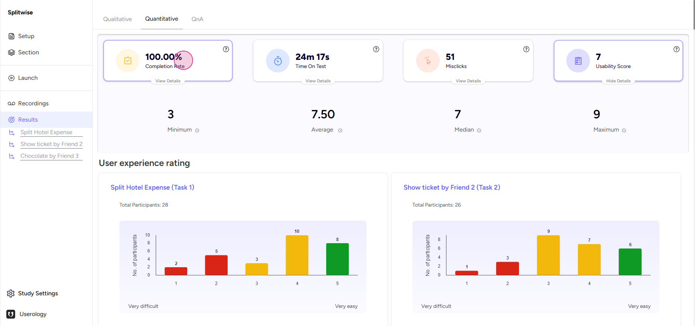
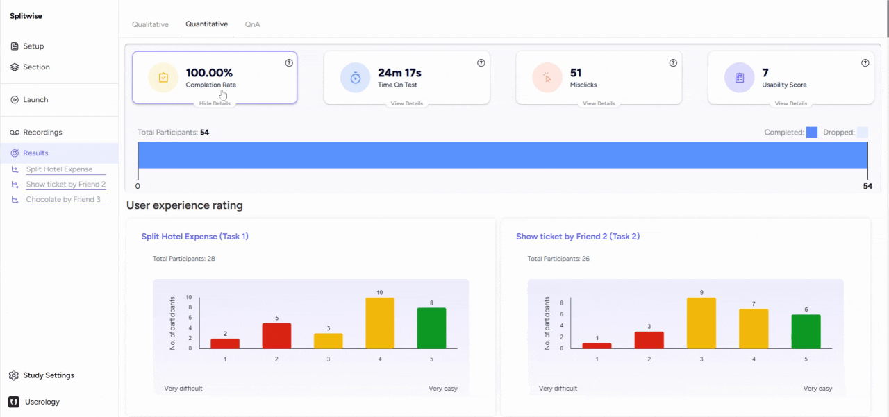
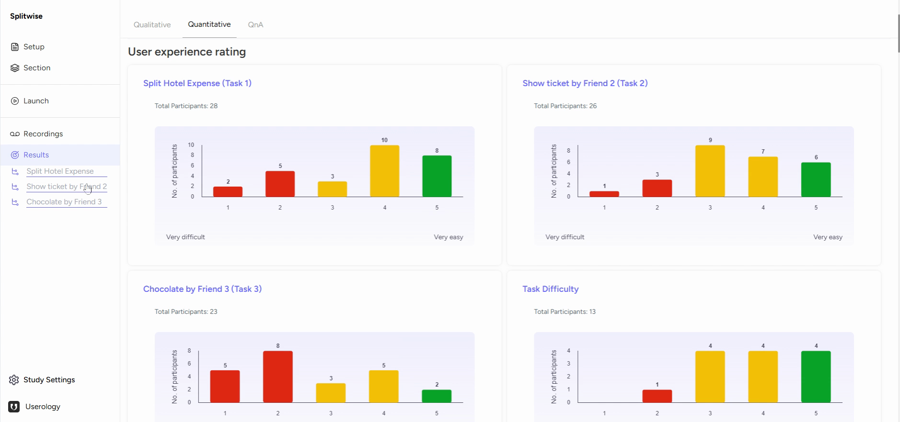

Accessing and Navigating the Quantitative Results Section
To access the Quantitative Results section, navigate to the Results tab of your study. Here, you will find a dedicated section for quantitative data.

At the top of this section, you will see four key metrics displayed as cards:
-
Completion Rate: The percentage of participants who completed the test.
-
Time on Test: The average time participants spent on the test.
-
Miss Clicks: The number of incorrect clicks made by participants.
-
Usability Score: A combined score reflecting the overall usability of the product or service based on participant responses.

Interpreting User Experience Ratings
Scroll down to view graphs representing user experience ratings for different tasks. For example, in the first task, you can see how participants rated the difficulty level.
This information is available for each task, allowing you to understand user experiences at a granular level.

If you need further help, please email us at support@userology.co